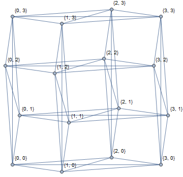

题目描述
请构造两个 (不同构的) 图，并证明它们不同构，并且使得下列 $6$ 个算法都误认为它们是同构的。
共有 $6$ 个图同构判定算法，简要描述如下：
| 算法编号 | 分数 | 简要描述 |
|---|
| 1 | 7 | 仅检查结点数及边数是否一致 |
| 2 | 13 | 首先仅检查结点数及边数，然后结点数很小时使用暴力，否则视为同构 |
| 3 | 19 | 初始每个结点颜色相同，每次对于每个结点结合自身的颜色和周围邻居的颜色编码产生新的颜色，反复迭代直至稳定。将最后每个图所得颜色进行排序，若相同则视为同构 |
| 4 | 21 | 与算法 3 类似，只是用结点间最短距离信息初始化结点颜色 |
| 5 | 17 | 枚举一个图中的一个固定的结点与另一个图中哪个结点对应，将他们分别染成特殊的颜色，其它结点颜色照常初始化，再用算法 3 中的迭代。若存在一种对应使得最后所得颜色相同，则视为同构 |
| 6 | 23 | 一种基于邻接矩阵的整数次幂的迹的哈希算法 |
任务
本题是一道交互式试题。
本题仅支持 C++，请包含头文件 isomorphism.h。
交互库里内置了一个结构体 graph 用来存储无向图，选手需要通过 propose 函数传递两个 graph 类型的结构体给交互库，并证明这两个图是不同构的。
证明的方式如下：
- 交互库收到选手传递的两个图 $A, B$。
- 重复如下过程 $50$ 次：
- 从 $A, B$ 中随机选择一个图 $G$
- 随机将 $G$ 中的边打乱顺序，并随机将 $G$ 的结点编号打乱顺序
- 将 $G$ 回传给选手，让选手判断 $G$ 到底是 $A$ 还是 $B$
如果 $A, B$ 是同构的，那么选手每次判断时只能依靠运气，成功 $50$ 次的概率不会超过 $2^{-50}$。所以经过这个证明过程之后，我们就有超过 $1 - 2^{-50}$ 的把握认为这两个图是不同构的了。
具体来说，选手需要编写两个函数 hack 和 identify，以指出同构判定鸡的错误。
hack()
- 无参数，无返回值，选手需要在这里生成两个图 $A, B$，并通过 propose 函数传递给交互库。
identify(g)
- $g$：一个 graph 类型的结构体，对应前文的 $G$。
- 返回值：返回一个等于 $1$ 或 $2$ 的整数。如果是 $1$ 则表示 $G$ 与 $A$ 同构，如果是 $2$ 则表示 $G$ 与 $B$ 同构。
你可以调用 propose 函数恰好一次以将你生成的图传递给交互库。
propose(a, b)
- $a$：一个 graph 类型的结构体，对应前文的 $A$。
- $b$：一个 graph 类型的结构体，对应前文的 $B$。
实现细节
具体各接口定义如下：
struct graph {
int n;
std::vector <std::pair <int, int> > e;
};
void hack();
void propose(graph a, graph b);
int identify(graph g);
题解
我们来依次卡 (Hack) 掉每一个算法。
首先是第 $1$ 个算法。随便给它扔两个 $\left| V \right|, \left| E \right|$ 都相同且不同构的图即可。这样的例子多了去了。
然后是第 $2$ 个算法。造一个稍微大点的图，或是在图 $1$ 的基础上加一些孤立点。
对于第 $3$ 个算法，容易看出颜色只和图中点的度数有关，因此放两个度数序列相同的图即可。更暴力一点，放两个 $k-$正则图就行啦。
这里简要讲一下 $k-$正则图的构造 (不一定是正则二分图)：
以 $k = 3$ 为例，我们再特殊一点，构造一张 $3-$正则$-H-$图 (即由 Hamilton 圈)。先构造一个圈图 $C_{2n}$，然后这张图的基础上随机一个匹配 (即点的配对)，注意不要和上面的圈有交。然后合并起来即可。
我们可以构造一张二分图和一张非二分图来容易证明它们是不同构的。由于这两张图是阶数相同的 $k-$正则图，因此 $\left| E \right| = \dfrac {k \left| V \right|} 2$ 也是相同的。
对于第 $4$ 个算法，由于它使用了最短距离信息。我们考虑怎么骗呢？我们新加入一个点，然后和原图中所有点连边。这样两点之间有边最短路即为 $1$，无边最短路即为 $2$。最短路信息也已经没意义啦！
对于第 $5$ 个算法，它枚举图中固定的节点与另一个图中哪个点对应。类似地，加一堆点和原图中所有点连边，然后这个点的特殊颜色就没什么卵用了。
最难的是第 $6$ 个算法，它判断两个图 $G_1, G_2$ 的邻接矩阵 $\mathbf M_1, \mathbf M_2$ 的整数次幂的迹是否相同。
我们知道，对任意 $k$，$\operatorname{\mathrm{tr}} \mathbf M_1^k = \operatorname{\mathrm{tr}} \mathbf M_2^k$ 的一个充分条件是，$\mathbf M_1$ 与 $\mathbf M_2$ 相似 (回忆一下矩阵相似的定义，即存在可逆矩阵 $\mathbf \Phi$，满足 $\mathbf M_1 = \mathbf \Phi^{-1} \cdot \mathbf M_2 \cdot \mathbf \Phi$)。
而两个矩阵如果都是可对角化的，则它们都与自己特征值构成的对角矩阵相似，而两个对角矩阵相似的充要条件是这两个矩阵对角线上的元素互为排列。
因此，两个可对角化矩阵相似的充要条件是，它们的特征值构成的集合相同，换句话说，它们的特征多项式相同。
而题目中的 $\mathbf M_1, \mathbf M_2$ 都是邻接矩阵，它们是实对称矩阵，因此是可对角化的。因此，我们把目标转化成了：构造两张图 $G_1, G_2$，使得它们的邻接矩阵 $\mathbf M_1, \mathbf M_2$ 具有相同的特征多项式。
考虑强正则图 $srg \left( n^2, 2 n - 2, n - 2, 2 \right)$，它的意思是说，这是一个 $n^2$ 个点的 $\left( 2 n - 2 \right)-$正则图，如果 $(u, v) \in E$，则有 $n - 2$ 个点与它们都相邻，如果 $(u, v) \notin E$，则有 $2$ 个点与它们都相邻。
由谱图理论知识，可以证明，如果 $G$ 是强正则图，则 $G$ 的邻接矩阵的 $n$ 个特征值分别为：一重的 $2 n - 2$ (度数)，$2 n - 2$ 重的 $n - 2$，以及 $\left( n - 1 \right)^2$ 重的 $-2$。
可以发现，强正则图不管长啥样，只要参数固定了，它们的特征值就是固定的。
也就是说，一旦我们构造出了两个不同构的强正则图，就解决了这个问题。
事实上，这样的构造存在，且唯一。仅有当 $n = 4$ 时，存在两张不同构的图，均为 $srg \left( 16, 6, 2, 2 \right)$。它们分别是：
$K_4 \times K_4$，即完全图 $K_4$ 与其自身的 Cartesian 积：
Shrikhande graph，构造方法：令 $V = \left\{ 0, 1, 2, 3 \right\} \times \left\{ 0, 1, 2, 3 \right\}$，$S = \left\{ \left( 0, 1 \right), \left( 0, 3 \right), \left( 1, 0 \right), \left( 3, 0 \right), \left( 1, 1 \right), \left( 3, 3 \right) \right\}$，$E = \left\{ \left( (u_1, u_2), (v_1, v_2) \right) \mid \left( u_1, u_2 \right), \left( v_1, v_2 \right) \in V, \left( u_1 - v_1, u_2 - v_2 \right) \in S \right\}$。
以上运算均在环 $\mathbb Z_4$ 下进行。则图 $G = \left( V, E \right)$ 就是 Shrinkhande graph。

容易验证它们都是 $srg \left( 16, 6, 2, 2 \right)$。且它们的邻接矩阵的特征多项式为 $f \left( \lambda \right) = \left( \lambda - 6 \right) \left( \lambda - 2 \right)^6 \left( \lambda + 2 \right)^9$，特征值为一重的 $6$，$6$ 重的 $2$ 和 $9$ 重的 $-2$。
而它们的确是不同构的，因为 $K_4 \times K_4$ 显然有 $K_4$ 作为子图，然而 Shrinkhande graph 没有 $K_4$ 作为子图 (不用找了，真的没有)。
因此，我们只需将 $K_4 \times K_4$ 和 Shrinkhande graph 传给交互库，即可 Hack 掉所有 $6$ 种算法，而 identify() 的过程是非常容易的：只需判断是否有 $K_4$ 作为子图，爆搜即可。
代码
#include "isomorphism.h"
#include <bits/stdc++.h>
#define EB emplace_back
const int dis[4][4] = {{0, 1, 2, 3}, {3, 0, 1, 2}, {2, 3, 0, 1}, {1, 2, 3, 0}};
const int allow[4][4] = {{0, 1, 0, 1}, {1, 1, 0, 0}, {0, 0, 0, 0}, {1, 0, 0, 1}};
bool G[16][16];
void hack() {
int i, j;
graph a, b;
a.n = 16;
for (i = 0; i < 15; ++i) // K4 x K4
for (j = i + 1; j < 16; ++j)
if (i >> 2 == j >> 2 || (i & 3) == (j & 3))
a.e.EB(i + 1, j + 1);
b.n = 16;
for (i = 0; i < 15; ++i) // Shrinkhande graph
for (j = i + 1; j < 16; ++j)
if (allow[ dis[i >> 2][j >> 2] ][ dis[i & 3][j & 3] ])
b.e.EB(i + 1, j + 1);
propose(a, b);
}
int identify(graph g) {
int i, j, k;
memset(G, 0, sizeof G);
for (auto e : g.e) G[e.first - 1][e.second - 1] = G[e.second - 1][e.first - 1] = 1;
for (i = 1; i < 14; ++i) if (G[0][i])
for (j = i + 1; j < 15; ++j) if (G[0][j] && G[i][j])
for (k = j + 1; k < 16; ++k)
if (G[0][k] && G[i][k] && G[j][k]) return 1;
return 2;
}
坑
坑1：注意题中 graph 中节点的编号从 $1$ 开始。